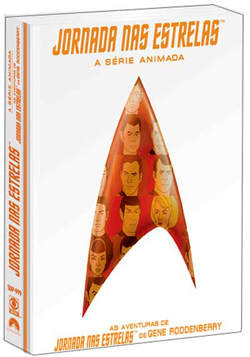
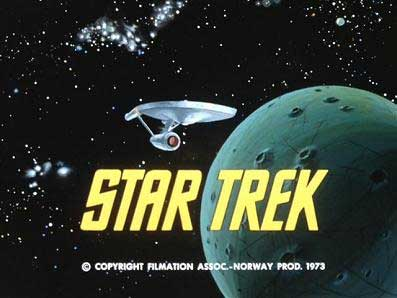
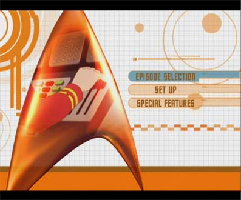
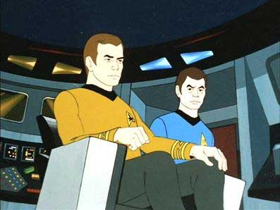
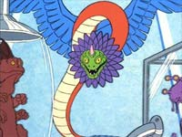

|

Publicado em 15.jan.2007
|
Jornada animada chega ao DVD Nos Estados Unidos, era a nica srie que faltava ser lanada -- e havia quem temesse nunca ver a verso animada de Jornada nas Estrelas no formato DVD. O motivo um certo repdio que foi gerado em torno da produo aps sua concluso -- o prprio criador, Gene Roddenberry, pediu que a Paramount no considerasse os episdios em desenho parte da histria "oficial" (ou "cannica", usando um linguajar ainda mais pesado) do universo de Star Trek. Natural, portanto, que os fs no esperassem muito nimo do estdio para lanar esse produto. Da no ter sido surpresa a Paramount aparecer com esse lanamento somente depois que no havia mais nada de Jornada para ser colocado no mercado de DVDs.
 J no Brasil a reao foi oposta -- o box-set da Srie Animada chegou ao pas em tempo recorde (menos de duas semanas depois que foi lanado nos Estados Unidos), mostrando um entusiasmo e um vigor sem precedentes por parte da Paramount Home Entertainment. A pergunta que alguns podem se fazer : por qu?No h uma palavra oficial a esse respeito, mas podemos especular duas razes. Em primeiro lugar, no Brasil no h nada na franquia de Jornada nas Estrelas que seja to popular quanto a Srie Clssica. Natural ento que o estdio se anime mais a trazer um lanamento como a Srie Animada, que conta com os personagens mais amados e conhecidos entre os fs tupiniquins, do que apostar num produto mais voltado para os fs "die-hard", como a terceira temporada de A Nova Gerao. A segunda razo a poca do ano -- o lanamento ocorreu no perodo mais forte de compras de Natal, e um produto como o box-set da Srie Animada (que possui s quatro discos e, por isso, acaba saindo mais barato) tem muito mais chance de virar um presente do que uma caixa de DVDs da Srie Clssica ou de A Nova Gerao. Essa pressa toda para trazer o produto ao mercado nacional tem suas vantagens e desvantagens. O principal ganho bvio: podemos colocar mais cedo nossas mos nessas legtimas raridades, que foram exibidas apenas uma vez na tev brasileira, pela Globo, no fim dos anos 1970.  J a perda gira em torno da falta de tempo para adaptar o produto ao mercado nacional. Os discos vieram ao Brasil exatamente iguais aos do mercado americano -- com menus somente em ingls. a primeira vez que a Paramount Home Entertainment lana um DVD de Jornada nas Estrelas no Brasil sem os menus adaptados para o portugus.  A verdade que isso no faz muita diferena, porque todos os episdios e extras esto legendados em portugus (caracterstica, alis, que est presente nos discos americanos, mostrando como o mercado brasileiro comea a influenciar a poltica de lanamentos da Paramount em suas razes -- o que , por si s, uma excelente notcia). A seguir, uma viso detalhada do que os fs podem esperar deste lanamento. Lembrando sempre, claro, que voc no vai encontrar aqui uma anlise individual de cada um dos 22 episdios da Srie Animada. (Para isso, v ao Guia de Episdios do TB relativo a essa produo.) Os episdios A Srie Animada s tem uma caracterstica que a separa da Srie Clssica -- ela animada. E mal animada, bom que se diga logo de cara, para no criar muitas expectativas. Com prazos e oramentos apertados, a Filmation (companhia responsvel pela produo dos episdios) teve de usar de muita criatividade (e muita animao repetida e limitada) para produzir os episdios. Isso, somado s limitaes da tecnologia em 1973-74, obrigou a produo a concentrar-se no nico elemento que no dependia de fortunas -- o roteiro. Graas a isso (e a uma greve de roteiristas que liberou muita gente boa para trabalhar no desenho), a Srie Animada tem algumas histrias que facilmente poderiam ter sido episdios do seriado original.  As histrias foram concebidas por veteranos da fico cientfica em geral e de Jornada em particular. Tivemos episdios escritos por Larry Niven, Samuel Peeples, Theodore Sturgeon, David Gerrold, D.C. Fontana (que serviu como chefe da equipe de roteiristas da srie) e at de Walter Koenig (Chekov), que ficou de fora como ator, mas acabou marcando presena como escritor. E, para melhorar, temos nesses DVDs a melhor apresentao j obtida para esses episdios. Entretanto, a qualidade da imagem flutua muito de clula para clula (esses so produes antigas e no foram exatamente mantidas no melhor estado de conservao), de modo que o maior destaque fica por conta do udio -- que agora aparece numa remasterizao em Dolby 5.1. (Alm disso, temos som mono em espanhol e em ingls, mas nada de portugus.) Os comentrios Alguns episdios contam com comentrios em texto por Michael e Denise Okuda. J virou tradio para a Paramount incluir esses em seus lanamentos em DVDs, mas claramente os Okudas esto cada vez mais cansados de inventar comentrios. No caso da Srie Animada, eles comentam os episdios "Yesteryear", "The Eye of the Beholder" e "The Counter-Clock Incident". Sem grandes emoes. Em compensao os comentrios em udio so bem mais interessantes. Nos episdios "More Tribbles, More Troubles" e "Bem", podemos ouvir as impresses e histrias de David Gerrold -- o escritor desses segmentos, assim como do clssico da Srie Clssica "The Trouble With Tribbles". A principal descoberta a de que ambos os episdios foram pensados para a srie original. "More Tribbles, More Troubles" chegou a ser oferecido para a terceira temporada, mas acabou recusado pelo novo produtor da srie, Fred Freiberger, sob o argumento de que Jornada no era uma srie de comdia. O segundo foi pensado para a quarta temporada, que nunca aconteceu.
 J no episdio "How Sharper Than a Serpent's Tooth", podemos ouvir o escritor David Wise, co-roteirista desse segmento. Eu particularmente nunca fui um grande f desse episdio, mas as informaes fornecidas por Wise me fizeram adquirir uma nova apreciao dele. Graas a ele eu descobri que foi por conta desse episdio que Jornada nas Estrelas ganhou o seu nico Emmy criativo em toda a histria, como melhor srie infantil. Segundo Wise, foi esse o episdio escolhido para representar a srie junto ao comit do Emmy que julgaria o mrito. (Um detalhe importante: a trilha de Wise no mencionada na caixa brasileira, mas est l -- no sofra por antecipao!)Os comentrios em udio tambm do uma boa perspectiva de como os episdios foram pensados para manter um alto grau de fidelidade com a srie original -- a despeito da flexibilidade maior de roteirizao oferecida pela perspectiva da animao. Os extras Por um lado, uma quantidade relativamente pequena de extras. Por outro, no tenho do que reclamar -- no consigo imaginar mais nada que eles pudessem colocar nesse pacote. Mas vamos a uma anlise de cada um dos contedos disponveis. Galeria de storyboards H uma seqncia de storyboards do episdio "The Infinite Vulcan" (segmento que de autoria de Walter Koenig). A seqncia de imagens em preto-e-branco d uma boa noo de como esses episdios da Srie Animada eram planejados antes que os desenhistas trabalhassem na animao em si. O leitor pode se perguntar: por que no colocar storyboards de outros episdios? Isso no seria necessrio. Ele serve mais para aprendizado do que para entretenimento, de modo que ter um s j est bom demais. Animado at a Fronteira Final Um documentrio que conta com a participao de vrios dos envolvidos na Srie Animada, com destaque para os produtores da Filmation, que no fazem parte dos "mesmos culpados de sempre" nos documentrios de Jornada nas Estrelas. O segmento divertido e intercala entrevistas com trechos dos desenhos. uma tima maneira de conhecer os bastidores do seriado (embora voc possa encontrar ainda muito mais informao sobre isso clicando aqui). Dirio de Bordo da Srie O calcanhar-de-aquiles do box-set. Trata-se apenas de uma seqncia de pginas de texto sobre a Srie Animada. Sofrvel. A Conexo Jornada nas Estrelas Uma seqncia interessante (embora no terrivelmente divertida) de imagens que mostram como a to repudiada Srie Animada influenciou a futura histria da franquia. uma forma interessante de ver as ligaes entre as diversas sries de Jornada, partindo do que apareceu no desenho. O frigir dos ovos A Srie Animada certamente no a coisa mais espetacular que voc j viu. Em compensao, uma forma muito agradvel de travar contato com uma parte pouco conhecida da histria da franquia, que ainda caminhava para se tornar a gigante que hoje, e de matar a saudade de Kirk, Spock, McCoy, Sulu, Scott e Uhura, com as vozes dos atores originais, em aventuras que so, para todos os efeitos, inditas no Brasil. |